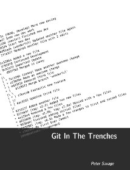
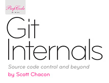

External Links
Tutorials
Short & Sweet
-
Official Git Tutorial
The official gittutorial man page is a good place to start.
-
Git Immersion
A guided tour that walks through the fundamentals of Git.
-
Everyday Git
Learn the basics with 20 of the most common commands.
-
Backlog Git Tutorial
It includes an introduction for complete beginners as well as hands-on tutorials for intermediate learners. ( Japanese / Korean / Simplified Chinese / Traditional Chinese / Vietnamese )
Diving Deeper
-
Ry’s Git Tutorial
A hands-on introduction to the entire Git porcelain.
-
Git for Computer Scientists
A quick introduction to Git internals for people who aren't scared by words like Directed Acyclic Graph.
-
Git Magic
An alternative book with the source online.
-
Git: Version Control Made Easy
Use the powerful features of Git in your projects.
-
Hands-On Version Control with Git [Video]
Better project workflows with Distributed Version Control.
-
Learn Git in 3 Hours [Video]
Build powerful and effective projects using Git Version Control Systems.
-
Git for Data Science
Best practices and typical Git workflows for data science.
-
Git for Designers
No knowledge of version control? No problem.
-
git-draw
git-draw is a small tool that draws nearly the full content of a tiny git repository as a graph. It helps people with an engineering background learning Git's internals.
-
GitHub Docs
Guides on a variety of Git and GitHub related topics.
-
Version Control with Git [Video]
Your Guide to deliver great code using TFS and Git.
-
Conquering Git: Advanced Training Guide [Video]
Master versioning and manage your code with Git by controlling its workflow and using it for your projects.
-
Git and Version Control [Video]
Learn the basics of Git and Version Control through detailed and easy to follow steps.
Books
-

Pro Git
By Scott Chacon and Ben Straub
-
Mastering Git
By Jakub Narębski
-

Git in Practice
By Mike McQuaid
-

Git in the Trenches
By Peter Savage
-
Git: Version Control for Everyone
By Ravishankar Somasundaram
-
Git Essentials - Second Edition
By Ferdinando Santacroce
-
Git Version Control Cookbook - Second Edition
By Kenneth Geisshirt
-
Git for Teams
By Emma Jane Hogbin Westby
-
Learning Git: A Hands-On and Visual Guide to the Basics of Git
By Anna Skoulikari


-
Version Control with Git, 2nd ed.
By Jon Loeliger & Matthew McCullough
-
Pragmatic Guide to Git
By Travis Swicegood
-
Pragmatic Version Control Using Git
By Travis Swicegood
-

Git Internals Peepcode PDF
By Scott Chacon
-
Git Version Control Cookbook
By Aske Olsson and Rasmus Voss
-

Learn Git in a Month of Lunches
By Rick Umali
-
Version Control with Git and GitHub
By Alex Magana, Joseph Muli
-

Beginning Git and GitHub
By Mariot Tsitoara
-
Boost Your Git DX
By Adam Johnson


Videos
-
Tech Talk: Linus Torvalds on Git
Linus Torvalds visits Google to share his thoughts on Git, the SCM system he created.
-
Introduction to Git: Scott Chacon
This talk introduces the Git Version Control System by looking at what Git is doing when you run the commands you need to do basic version control with it.
Courses
-
Git: Mastering Version Control
By Ferdinando Santacroce, Aske Olsson, Rasmus Voss and Jakub Narębski
-
Versioned and reproducible storage of code and data
Three-day course on Git in data science